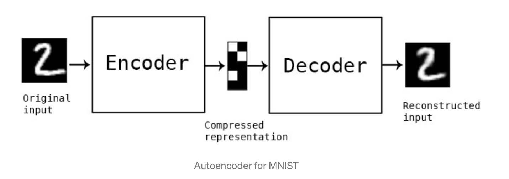
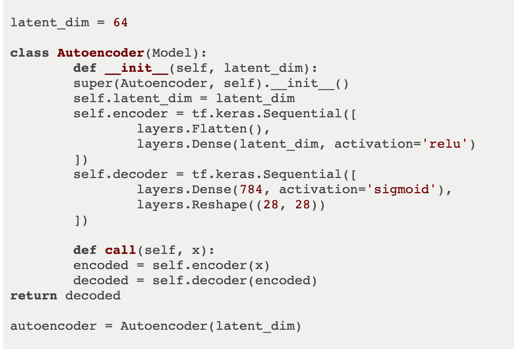

A simple (and minimalist) neural network architecture that efficiently trains in an unsupervised manner. Such architectures consist of two main parts: an encoder—which compresses the input and converts it into code-readble data, and a decoder—which given the output from the encoder, makes a best attempt to reconstruct the input data as close as possible. For example, provided as input an image from the MNIST dataset (as shown below on the left), an auto encoder might produce the compressed representation of that image (on the right).
The encoder and decoder layers of auto encoders act just as those in a more complicated neural network architecture—they are comprised of nodes that receive input and produce output and each have associated weights. After once the decoder has made an attempt at reconstructing the input data the error is measured between the input and output, just as is the case with networks that rely on supervised learning. The difference here is that rather than having labeled data, the loss is measured between the initial input and the compressed and reconfigured output based on this input. In this way, auto encoders act essentially as single perceptrons of a neural network—in fact they were just an early use case of “shallow-learning” neural networks.
While similar to individual perceptrons of modern deep learning neural networks, auto encoders have some distinct use-cases. By compressing the data rather than completely preserving it, auto encoders perform particularly well at highlighting the most “important” aspects of provided data while ignoring any outliers and noise. This makes auto encoders especially useful in feature detection and primitive classification. In fact, early deep learning architectures utilized auto encoders as the initial layers of neural networks in order to increase their efficiency. Other important uses of auto encoders are as follows:
Below is example code for an encoder using modern deep-learning technologies such as TensorFlow
